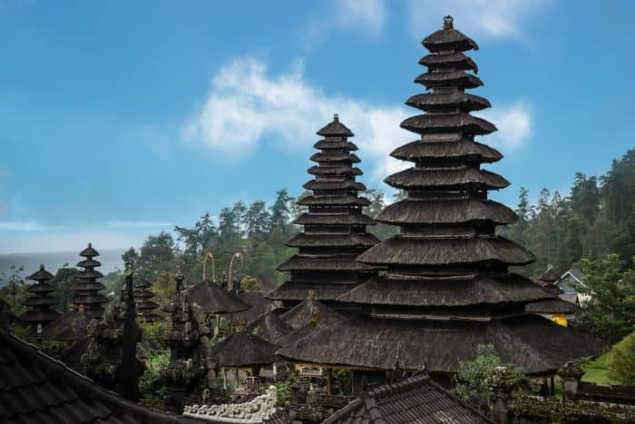

Pura Bali
Pura Bali
 Saat wisatawan liburan ke pulau Bali, yang ada dalam pikiran wisatawan adalah liburan ke objek wisata pantai pasir putih, melihat pemandangan gunung dan danau di Kintamani, atau membayangkan melihat keindahan pemandangan sawah terasering Jatiluwih. Selain keindahan alam, daya tarik wisata pulau Bali juga terdapat pada seni dan budaya. Salah satunya adalah tempat wisata pura. Dari sekian banyak objek wisata pura yang ada di pulau Bali, Pura Taman Ayun salah satu pura yang wajib anda kunjungi saat liburan ke pulau Bali. |
Pura Besakih
|
 Pura besakih adalah salah satu tempat persembahyangan bagi umat hindu di Bali. Selain menjadi tempat ibadah, pura besakih juga menjadi tempat wisata yang banyak dikunjungi para wisatawan.Pura besakih bali juga sering disebut dengan nama pura agung besakih. Pura besakih bali terdiri dari 1 pusat pura yang diberi nama pura penataran agung besakih dan terdapat 18 pura pendamping yang berada di sekeliling dari pura penataran agung besakih. Karena begitu banyaknya pura dalam satu wilayah, maka pura besakih menjadi pura yang terbesar di Bali. Setiap harinya tentu ada wisatawan yang berkunjung untuk menikmati keindahan pura besakih serta pemandangan gunung agung di belakangnytd> |
Pura Ubud
 Pura Taman Saraswati terletak di pusat pariwisata Ubud, kabupaten Gianyar Bali. Pura ini tergolong cukup populer bagi wisatawan, sehingga menjadikannya sebagai tujuan tour ketika liburan dan wisata ke kawasan pariwisata Ubud. Tentu banyak hal menarik yang bisa anda nikmati di Pura Taman Saraswati, sehingga wisatawan wajib untuk berkunjung ke sini. Pulau Dewata Bali, selain menawarkan tempat rekreasi dan objek wisata alam, juga menawarkan keindahan budaya dan seni, yang sanggup membuat wisatawan betah untuk menikmati liburan. Bali dikenal juga dengan sebutan pulau seribu pura, karena banyak bangunan pura ada di pulau ini sehingga tidak mengherankan juga sebutan pulau Dewata melekat pada pulau Bali ini. Semua sifat kemahakuasaan dan keagungan Tuhan dimanifestasikan dalam sebutan Dewa ataupun Dewi |
Pura Bedugul
 tempat wisata menarik yang berada tepat pada area pinggir danau Bratan adalah pura Ulun Danu Bratan Bedugul. Pura Ulun Danu Beratan, pura yang sangat unik karena lokasi pura berada di tengah danau. Pada saat air danau naik, pura Ulun Danu Bratan Bedugul akan terlihat terapung pada permukaan air danau. Walaupun pulau Bali memiliki banyak objek wisata terkenal seperti tempat wisata Tanah Lot, pantai Kuta dan pura Luhur Uluwatu. Namun tempat wisata pura Ulun Danu Bratan Bedugul, selalu menjadi ikon pariwisata Bali. Jika anda pernah memperhatikan gambar lembaran mata uang Rp 50.000 yang lama, terdapat gambar pura Danu Beratan |